«Не могу забыть Вашего милого отношения к нашему классу» — открытки ученика 1914 года1914оборотИз Темрюка в Берлин по печатям: три документа Семёна Данилова, 1916–19231916оборотИз Темрюка в Берлин по печатям: три документа Семёна Данилова, 1916–19231920оборотИз Темрюка в Берлин по печатям: три документа Семёна Данилова, 1916–19231921оборотНемецкая рождественская открытка «Herzlichen Weihnachtsgruss», 1925: зимняя дорога, голые деревья, свет за холмом1925
«Не могу забыть Вашего милого отношения к нашему классу» — открытки ученика 1914 года1914оборотИз Темрюка в Берлин по печатям: три документа Семёна Данилова, 1916–19231916оборотИз Темрюка в Берлин по печатям: три документа Семёна Данилова, 1916–19231920оборотИз Темрюка в Берлин по печатям: три документа Семёна Данилова, 1916–19231921«Это таким я уехал из Крыма»: фотоальбом евпаторийского дома, 1924–19631924оборотНемецкая рождественская открытка «Fröhliche Weihnachten», 19251925оборотОт именин в реальном училище до Мальмё 1974-го: четырнадцать открыток из семейного архива1925оборотОт именин в реальном училище до Мальмё 1974-го: четырнадцать открыток из семейного архива1931«Я тебя всегда понимаю с двух-трёх слов»: письма из СССР в Швецию, 1936–19391936«Я тебя всегда понимаю с двух-трёх слов»: письма из СССР в Швецию, 1936–19391936«Я тебя всегда понимаю с двух-трёх слов»: письма из СССР в Швецию, 1936–19391936«Я тебя всегда понимаю с двух-трёх слов»: письма из СССР в Швецию, 1936–19391936«Я тебя всегда понимаю с двух-трёх слов»: письма из СССР в Швецию, 1936–19391937«Я тебя всегда понимаю с двух-трёх слов»: письма из СССР в Швецию, 1936–19391937«Я тебя всегда понимаю с двух-трёх слов»: письма из СССР в Швецию, 1936–19391937«Я тебя всегда понимаю с двух-трёх слов»: письма из СССР в Швецию, 1936–19391937«Я тебя всегда понимаю с двух-трёх слов»: письма из СССР в Швецию, 1936–19391937«Я тебя всегда понимаю с двух-трёх слов»: письма из СССР в Швецию, 1936–19391937«Я тебя всегда понимаю с двух-трёх слов»: письма из СССР в Швецию, 1936–19391939«Я тебя всегда понимаю с двух-трёх слов»: письма из СССР в Швецию, 1936–19391939«Я тебя всегда понимаю с двух-трёх слов»: письма из СССР в Швецию, 1936–19391939«Я тебя всегда понимаю с двух-трёх слов»: письма из СССР в Швецию, 1936–19391939«Я тебя всегда понимаю с двух-трёх слов»: письма из СССР в Швецию, 1936–19391939«Я тебя всегда понимаю с двух-трёх слов»: письма из СССР в Швецию, 1936–19391939«Это таким я уехал из Крыма»: фотоальбом евпаторийского дома, 1924–19631948оборот«Крымская сосна», Южный берег Крыма: карточка дореволюционной печати — «образуетъ лѣса въ среднемъ поясѣ горъ». Поздравление внуку 1948 года на обороте1948«В возрасте 74 года 4 месяца» — снимок бабушки от 9 июня 19491949«В возрасте 74 года 4 месяца» — снимок бабушки от 9 июня 19491949«Купили тебе скрипку»: два письма Евдокии Семёновны в Мальмё, 1950 и 19521950«Купили тебе скрипку»: два письма Евдокии Семёновны в Мальмё, 1950 и 19521950«Купили тебе скрипку»: два письма Евдокии Семёновны в Мальмё, 1950 и 19521950без подписи1952
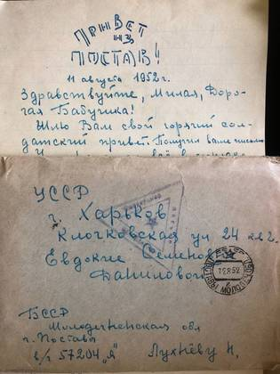
без подписи1952«Это таким я уехал из Крыма»: фотоальбом евпаторийского дома, 1924–19631952«Это таким я уехал из Крыма»: фотоальбом евпаторийского дома, 1924–19631952оборот«Это таким я уехал из Крыма»: фотоальбом евпаторийского дома, 1924–19631952оборот«Это таким я уехал из Крыма»: фотоальбом евпаторийского дома, 1924–19631952«Купили тебе скрипку»: два письма Евдокии Семёновны в Мальмё, 1950 и 19521952«Купили тебе скрипку»: два письма Евдокии Семёновны в Мальмё, 1950 и 19521952«Купили тебе скрипку»: два письма Евдокии Семёновны в Мальмё, 1950 и 19521952оборот«Это таким я уехал из Крыма»: фотоальбом евпаторийского дома, 1924–19631953оборот«Это таким я уехал из Крыма»: фотоальбом евпаторийского дома, 1924–19631954оборот«Крым. Евпатория. Уголок гор. сада»: скульптурная группа детей с шаром и ротонда за деревьями. Крымиздат, 1951, тираж 25 000, цена 30 копеек1954оборот«Это таким я уехал из Крыма»: фотоальбом евпаторийского дома, 1924–19631955«Это таким я уехал из Крыма»: фотоальбом евпаторийского дома, 1924–19631955«Это таким я уехал из Крыма»: фотоальбом евпаторийского дома, 1924–19631955«Это таким я уехал из Крыма»: фотоальбом евпаторийского дома, 1924–19631955оборот«Это таким я уехал из Крыма»: фотоальбом евпаторийского дома, 1924–19631956оборот«Это таким я уехал из Крыма»: фотоальбом евпаторийского дома, 1924–19631956оборот«Это таким я уехал из Крыма»: фотоальбом евпаторийского дома, 1924–19631957«Это таким я уехал из Крыма»: фотоальбом евпаторийского дома, 1924–19631958оборот«Это таким я уехал из Крыма»: фотоальбом евпаторийского дома, 1924–19631958От именин в реальном училище до Мальмё 1974-го: четырнадцать открыток из семейного архива1974
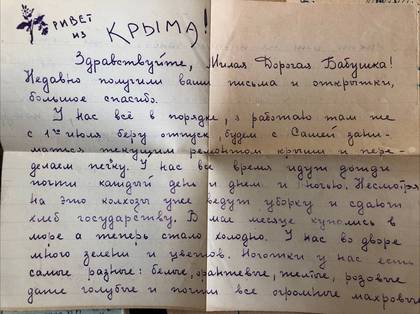
без подписи«Это таким я уехал из Крыма»: фотоальбом евпаторийского дома, 1924–1963«Это таким я уехал из Крыма»: фотоальбом евпаторийского дома, 1924–1963«Это таким я уехал из Крыма»: фотоальбом евпаторийского дома, 1924–1963«Это таким я уехал из Крыма»: фотоальбом евпаторийского дома, 1924–1963«Это таким я уехал из Крыма»: фотоальбом евпаторийского дома, 1924–1963«Это таким я уехал из Крыма»: фотоальбом евпаторийского дома, 1924–1963«Это таким я уехал из Крыма»: фотоальбом евпаторийского дома, 1924–1963«Это таким я уехал из Крыма»: фотоальбом евпаторийского дома, 1924–1963«Это таким я уехал из Крыма»: фотоальбом евпаторийского дома, 1924–1963оборот«Это таким я уехал из Крыма»: фотоальбом евпаторийского дома, 1924–1963оборот«Это таким я уехал из Крыма»: фотоальбом евпаторийского дома, 1924–1963оборот«Это таким я уехал из Крыма»: фотоальбом евпаторийского дома, 1924–1963«Это таким я уехал из Крыма»: фотоальбом евпаторийского дома, 1924–1963«Это таким я уехал из Крыма»: фотоальбом евпаторийского дома, 1924–1963«Это таким я уехал из Крыма»: фотоальбом евпаторийского дома, 1924–1963«Это таким я уехал из Крыма»: фотоальбом евпаторийского дома, 1924–1963«Это таким я уехал из Крыма»: фотоальбом евпаторийского дома, 1924–1963оборот«Это таким я уехал из Крыма»: фотоальбом евпаторийского дома, 1924–1963оборот«Это таким я уехал из Крыма»: фотоальбом евпаторийского дома, 1924–1963«Это таким я уехал из Крыма»: фотоальбом евпаторийского дома, 1924–1963«Это таким я уехал из Крыма»: фотоальбом евпаторийского дома, 1924–1963«Это таким я уехал из Крыма»: фотоальбом евпаторийского дома, 1924–1963«Это таким я уехал из Крыма»: фотоальбом евпаторийского дома, 1924–1963«Это таким я уехал из Крыма»: фотоальбом евпаторийского дома, 1924–1963«Это таким я уехал из Крыма»: фотоальбом евпаторийского дома, 1924–1963«Это таким я уехал из Крыма»: фотоальбом евпаторийского дома, 1924–1963«Это таким я уехал из Крыма»: фотоальбом евпаторийского дома, 1924–1963«Это таким я уехал из Крыма»: фотоальбом евпаторийского дома, 1924–1963«Это таким я уехал из Крыма»: фотоальбом евпаторийского дома, 1924–1963«Это таким я уехал из Крыма»: фотоальбом евпаторийского дома, 1924–1963«Это таким я уехал из Крыма»: фотоальбом евпаторийского дома, 1924–1963«Это таким я уехал из Крыма»: фотоальбом евпаторийского дома, 1924–1963оборотОткрытка мюнхенской печати (Gebrüder Obpacher, серия XXII): двое детей в яблоневом цвету. Правая половина лицевой стороны оставлена пустой — под письмооборотПасхальная открытка «Fröhliche Ostern!»: цыплята у большого розового яйца. Поверх яйца что-то дописано карандашом от рукиоборотОт именин в реальном училище до Мальмё 1974-го: четырнадцать открыток из семейного архива
«Я тебя всегда понимаю с двух-трёх слов»: письма из СССР в Швецию, 1936–19391936«Я тебя всегда понимаю с двух-трёх слов»: письма из СССР в Швецию, 1936–19391936«Я тебя всегда понимаю с двух-трёх слов»: письма из СССР в Швецию, 1936–19391936«Я тебя всегда понимаю с двух-трёх слов»: письма из СССР в Швецию, 1936–19391936«Я тебя всегда понимаю с двух-трёх слов»: письма из СССР в Швецию, 1936–19391937«Я тебя всегда понимаю с двух-трёх слов»: письма из СССР в Швецию, 1936–19391937«Я тебя всегда понимаю с двух-трёх слов»: письма из СССР в Швецию, 1936–19391937«Я тебя всегда понимаю с двух-трёх слов»: письма из СССР в Швецию, 1936–19391937«Я тебя всегда понимаю с двух-трёх слов»: письма из СССР в Швецию, 1936–19391937«Я тебя всегда понимаю с двух-трёх слов»: письма из СССР в Швецию, 1936–19391937«Я тебя всегда понимаю с двух-трёх слов»: письма из СССР в Швецию, 1936–19391939«Я тебя всегда понимаю с двух-трёх слов»: письма из СССР в Швецию, 1936–19391939«Я тебя всегда понимаю с двух-трёх слов»: письма из СССР в Швецию, 1936–19391939«Я тебя всегда понимаю с двух-трёх слов»: письма из СССР в Швецию, 1936–19391939«Я тебя всегда понимаю с двух-трёх слов»: письма из СССР в Швецию, 1936–19391939«Я тебя всегда понимаю с двух-трёх слов»: письма из СССР в Швецию, 1936–19391939
оборотИз Темрюка в Берлин по печатям: три документа Семёна Данилова, 1916–19231916Керчь, 23 декабря 1916: «Дорогую Тюню поздравляю с праздниками. Сеня» — открытка сестре, отпечатана в Англии1916оборотИз Темрюка в Берлин по печатям: три документа Семёна Данилова, 1916–19231920оборотИз Темрюка в Берлин по печатям: три документа Семёна Данилова, 1916–19231921оборотОткрытка из Митвайды, 1925: цветная карточка — девочка с жёлтым букетом. Письмо на обороте1925оборотОт именин в реальном училище до Мальмё 1974-го: четырнадцать открыток из семейного архива1925оборотОткрытка из Митвайды, август 1925: сжатое поле и деревня с колокольней в излучине реки, по краям — полосы из маков, васильков и ромашек1925оборотИменинная открытка из Лауэнхайна, 1926: «Dreaming, dreaming of You» — ребёнок спит на месяце1926оборотОткрытка из Айзенаха, 1927: Вартбург над прудом Хайнтайх1927оборотОткрытка из Саксонской Швейцарии, 1927: гостиница на скале Бранд1927оборотОткрытка из Хемница, 1928: общий вид города — «Chemnitz i. Sa., Totalansicht»1928оборотбез подписи1928оборотбез подписи1928оборотОткрытка 1929: скала Харрасфельзен у Лихтенвальде в долине Чопау, по мосту идёт паровоз1929оборотОткрытка из Гармиша, 1929: рыночная площадь и хребет Веттерштайн — вершины подписаны прямо на карточке1929оборотОт именин в реальном училище до Мальмё 1974-го: четырнадцать открыток из семейного архива1931оборотОткрытка из Копенгагена, июль 1931: Королевский театр — «Det kongelige Teater», флаг над крышей, велосипедисты на площади1931оборотОткрытка из Гамбурга, август 1934: писаный маслом порт — пароход под перегружателем, буксиры и зелёный катер1934оборотОткрытка из Гамбурга, декабрь 1934: писаный маслом порт в серый день — шпили над складами, мост и буксиры1934«Я тебя всегда понимаю с двух-трёх слов»: письма из СССР в Швецию, 1936–19391936«Я тебя всегда понимаю с двух-трёх слов»: письма из СССР в Швецию, 1936–19391936«Я тебя всегда понимаю с двух-трёх слов»: письма из СССР в Швецию, 1936–19391936«Я тебя всегда понимаю с двух-трёх слов»: письма из СССР в Швецию, 1936–19391936оборотОткрытка 1936: Урфельд на Вальхензее и Веттерштайн вдали, у самой воды — «Hotel Jäger am See»1936«Я тебя всегда понимаю с двух-трёх слов»: письма из СССР в Швецию, 1936–19391937«Я тебя всегда понимаю с двух-трёх слов»: письма из СССР в Швецию, 1936–19391937«Я тебя всегда понимаю с двух-трёх слов»: письма из СССР в Швецию, 1936–19391937«Я тебя всегда понимаю с двух-трёх слов»: письма из СССР в Швецию, 1936–19391937«Я тебя всегда понимаю с двух-трёх слов»: письма из СССР в Швецию, 1936–19391937«Я тебя всегда понимаю с двух-трёх слов»: письма из СССР в Швецию, 1936–19391937«Я тебя всегда понимаю с двух-трёх слов»: письма из СССР в Швецию, 1936–19391939«Я тебя всегда понимаю с двух-трёх слов»: письма из СССР в Швецию, 1936–19391939«Я тебя всегда понимаю с двух-трёх слов»: письма из СССР в Швецию, 1936–19391939«Я тебя всегда понимаю с двух-трёх слов»: письма из СССР в Швецию, 1936–19391939«Я тебя всегда понимаю с двух-трёх слов»: письма из СССР в Швецию, 1936–19391939«Я тебя всегда понимаю с двух-трёх слов»: письма из СССР в Швецию, 1936–19391939Свадьба, 1948: на ступенях — у неё букет роз и шляпка с цветами, у него гвоздика в петлице и пальто на руке1948«Купили тебе скрипку»: два письма Евдокии Семёновны в Мальмё, 1950 и 19521950«Купили тебе скрипку»: два письма Евдокии Семёновны в Мальмё, 1950 и 19521950«Купили тебе скрипку»: два письма Евдокии Семёновны в Мальмё, 1950 и 195219501950, у садового домика: с дочерью на руках у стены и на подстилке в саду1950оборотОткрытка из Мальмё, 1950: натюрморт — маки в вазе и синяя пиала1950Рождество 1951: три кадра — девочка за накрытым столом под ёлкой с зажжёнными свечами, она же у него на коленях, и снимок с кем-то из старших1951«Купили тебе скрипку»: два письма Евдокии Семёновны в Мальмё, 1950 и 19521952«Купили тебе скрипку»: два письма Евдокии Семёновны в Мальмё, 1950 и 19521952«Купили тебе скрипку»: два письма Евдокии Семёновны в Мальмё, 1950 и 19521952оборотОткрытка «Köln, Rheinansicht»: собор над Рейном и ещё не восстановленные руины вокруг него — послевоенный город; у набережной речной пароход1952От именин в реальном училище до Мальмё 1974-го: четырнадцать открыток из семейного архива1974Семь языков и «подожди пока возвращаться»: как Сеня Данилов остался на ЗападеКартина Дуни: холст в синем; в правом верхнем углу сквозь краску проступает печатный текст с консульским штампомКартина маслом в раме: гавань, белые лодки у причала и красный деревянный дом, отражённый в водеДва кадра с работы в Мальмё: бригада у машины в цеху и работа за столом в белом халатеКабинетная карточка: школьный оркестр — около двадцати пяти мальчиков в форменных гимнастёрках со скрипками, виолончелями и контрабасом, впереди трое взрослыхоборотШведская рождественская открытка из Мальмё: «GOD JUL», дети у освещённого окна в сугробахоборотОт именин в реальном училище до Мальмё 1974-го: четырнадцать открыток из семейного архива
Аттестат 1920 года: латынь, логика и политэкономия в бывшей женской гимназии1920Единое удостоверение № 17 Темрюкского исполкома, 31 июля 1922: воспитательница детского очага № 21922«Это таким я уехал из Крыма»: фотоальбом евпаторийского дома, 1924–19631924Темрюкский райОНО, 15 января 1925: поручение сделать доклад о дошкольном воспитании на собрании союза Рабпрос1925Темрюкский райОНО, 13 апреля 1925: очередной отпуск воспитательнице детдома с 4 апреля по 19 мая1925Удостоверение Темрюкского райисполкома № 943, 14 октября 1925: воспитательница городского детдома с января 1924 по октябрь 19251925Краснодар, 12 января 1925: окружной инспектор дошкольного воспитания Гепнер зовёт завязать письменную связь между работниками города и станицы — «без присылки Вами сообщений о работе, местной жизни, о Ваших затруднениях и продвижениях наша связь будет тормозиться»1925оборотОт именин в реальном училище до Мальмё 1974-го: четырнадцать открыток из семейного архива1925Справка школы I ступени села Фонталовской, 28 ноября 1926: пятнадцать дней замещала учительницу Мартынову1926Удостоверение Таманского детдома № 86, 8 марта 1926: трудовой отпуск с 10 марта по 10 апреля, сбоку приписка инспектора ОНО от 24 марта о продлении по 24 апреля1926Справка Таманского детдома, 28 октября 1926: год воспитателем — «не считаясь со временем, вникая во все стороны работы»1926Темрюкский райисполком, январь 1927: назначение заместительницей в школу I ступени хутора Черново-Лозинского1927Керченская детская трудовая колония имени Томского: год работы и штамп биржи труда1928Справка от 26 ноября 1929: сестра-руководительница детских яслей при консервной фабрике № 8 в Темрюке1929Керченская детская трудовая колония имени Томского: год работы и штамп биржи труда1929оборотНотариально заверенная копия удостоверения № 943: «как опытная работница проявила себя с лучшей стороны, принимая участие в работе среди детей Темрюкского детдома»1929Заведывающая Введенской школой: две недели марта и справка через четыре месяца1929Справка ОНО 2-го района, аул Понежукай, 6 мая 1930: временная учительница школы I ступени в хуторе Большой Кашпур, с 28 января по 5 мая1930Удостоверение № 447 областного отдела народного образования А. Ч. А. О.: учительница школы I ступени в Красном Селе с 1 сентября 19301930Справка от 20 августа 1930: медсестра колхозных детских яслей станицы Курчанской, с 1 июня по 20 августа — «вникала на остальных служащих своей привязанностью к детям»1930Псекупский райОНО, 8 августа 1930: место учительницы в школе хутора Малый Кашпур с 1 сентября1930Циркуляр Псекупского РИКа всем заведующим школами, 18 февраля 1930: срочно заполнить «карточки школьного района». Адресован в хутор Большой Кашпур1930Записка от 30 августа 1931: передать назначение «Даниловой (Лухневой)» не позже 31 августа, чтобы успела выехать к месту службы1931Справка от 4 февраля 1931: учительница в Красном Селе Псекупского района с 1 сентября 1930 по 25 января 1931, уволилась по болезни1931Красногвардейское ОНО, 17 октября 1931: перевод в школу I ступени с возложением обязанностей заведующей с 19 октября. Обращение — уже «учительнице Лухневой»1931оборотОт именин в реальном училище до Мальмё 1974-го: четырнадцать открыток из семейного архива1931«Я тебя всегда понимаю с двух-трёх слов»: письма из СССР в Швецию, 1936–19391936«Я тебя всегда понимаю с двух-трёх слов»: письма из СССР в Швецию, 1936–19391936«Я тебя всегда понимаю с двух-трёх слов»: письма из СССР в Швецию, 1936–19391936«Я тебя всегда понимаю с двух-трёх слов»: письма из СССР в Швецию, 1936–19391936«Я тебя всегда понимаю с двух-трёх слов»: письма из СССР в Швецию, 1936–19391937«Я тебя всегда понимаю с двух-трёх слов»: письма из СССР в Швецию, 1936–19391937«Я тебя всегда понимаю с двух-трёх слов»: письма из СССР в Швецию, 1936–19391937«Я тебя всегда понимаю с двух-трёх слов»: письма из СССР в Швецию, 1936–19391937«Я тебя всегда понимаю с двух-трёх слов»: письма из СССР в Швецию, 1936–19391937«Я тебя всегда понимаю с двух-трёх слов»: письма из СССР в Швецию, 1936–19391937Харьков 1937–1938: детинтернат военных строителей, где сходятся муж и жена1938«Я тебя всегда понимаю с двух-трёх слов»: письма из СССР в Швецию, 1936–19391939«Я тебя всегда понимаю с двух-трёх слов»: письма из СССР в Швецию, 1936–19391939«Я тебя всегда понимаю с двух-трёх слов»: письма из СССР в Швецию, 1936–19391939«Я тебя всегда понимаю с двух-трёх слов»: письма из СССР в Швецию, 1936–19391939«Я тебя всегда понимаю с двух-трёх слов»: письма из СССР в Швецию, 1936–19391939«Я тебя всегда понимаю с двух-трёх слов»: письма из СССР в Швецию, 1936–19391939«Это таким я уехал из Крыма»: фотоальбом евпаторийского дома, 1924–19631948«Купили тебе скрипку»: два письма Евдокии Семёновны в Мальмё, 1950 и 19521950«Купили тебе скрипку»: два письма Евдокии Семёновны в Мальмё, 1950 и 19521950«Купили тебе скрипку»: два письма Евдокии Семёновны в Мальмё, 1950 и 19521950«Мамуленьке от её сына Коли» — солдатская карточка 1952 года1952«Мамуленьке от её сына Коли» — солдатская карточка 1952 года1952«Это таким я уехал из Крыма»: фотоальбом евпаторийского дома, 1924–19631952«Это таким я уехал из Крыма»: фотоальбом евпаторийского дома, 1924–19631952оборот«Это таким я уехал из Крыма»: фотоальбом евпаторийского дома, 1924–19631952оборот«Это таким я уехал из Крыма»: фотоальбом евпаторийского дома, 1924–19631952«Купили тебе скрипку»: два письма Евдокии Семёновны в Мальмё, 1950 и 19521952«Купили тебе скрипку»: два письма Евдокии Семёновны в Мальмё, 1950 и 19521952«Купили тебе скрипку»: два письма Евдокии Семёновны в Мальмё, 1950 и 19521952
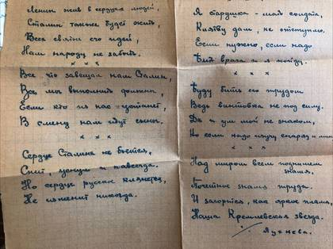
без подписи1953оборот«Это таким я уехал из Крыма»: фотоальбом евпаторийского дома, 1924–19631953«Фуражку на мою башку»: письма Александра Лухнёва из Миасса и с полевых партий, 1954–19611954оборот«Это таким я уехал из Крыма»: фотоальбом евпаторийского дома, 1924–19631954оборот«Крым. Евпатория. Уголок гор. сада»: скульптурная группа детей с шаром и ротонда за деревьями. Крымиздат, 1951, тираж 25 000, цена 30 копеек1954Три года и три месяца: солдатские письма Николая Лухнёва, 1952–19551955Три года и три месяца: солдатские письма Николая Лухнёва, 1952–19551955Три года и три месяца: солдатские письма Николая Лухнёва, 1952–19551955Три года и три месяца: солдатские письма Николая Лухнёва, 1952–19551955Три года и три месяца: солдатские письма Николая Лухнёва, 1952–19551955Три года и три месяца: солдатские письма Николая Лухнёва, 1952–19551955Три года и три месяца: солдатские письма Николая Лухнёва, 1952–19551955«Фуражку на мою башку»: письма Александра Лухнёва из Миасса и с полевых партий, 1954–19611955оборот«Это таким я уехал из Крыма»: фотоальбом евпаторийского дома, 1924–19631955«Это таким я уехал из Крыма»: фотоальбом евпаторийского дома, 1924–19631955«Это таким я уехал из Крыма»: фотоальбом евпаторийского дома, 1924–19631955«Это таким я уехал из Крыма»: фотоальбом евпаторийского дома, 1924–19631955«Фуражку на мою башку»: письма Александра Лухнёва из Миасса и с полевых партий, 1954–19611955«Фуражку на мою башку»: письма Александра Лухнёва из Миасса и с полевых партий, 1954–19611955«Фуражку на мою башку»: письма Александра Лухнёва из Миасса и с полевых партий, 1954–19611955«Фуражку на мою башку»: письма Александра Лухнёва из Миасса и с полевых партий, 1954–19611955«Фуражку на мою башку»: письма Александра Лухнёва из Миасса и с полевых партий, 1954–19611955«Фуражку на мою башку»: письма Александра Лухнёва из Миасса и с полевых партий, 1954–19611955«Фуражку на мою башку»: письма Александра Лухнёва из Миасса и с полевых партий, 1954–19611955Три года и три месяца: солдатские письма Николая Лухнёва, 1952–19551956оборот«Фуражку на мою башку»: письма Александра Лухнёва из Миасса и с полевых партий, 1954–19611956«Фуражку на мою башку»: письма Александра Лухнёва из Миасса и с полевых партий, 1954–19611956«Фуражку на мою башку»: письма Александра Лухнёва из Миасса и с полевых партий, 1954–19611956оборот«Это таким я уехал из Крыма»: фотоальбом евпаторийского дома, 1924–19631956оборот«Это таким я уехал из Крыма»: фотоальбом евпаторийского дома, 1924–19631956«Фуражку на мою башку»: письма Александра Лухнёва из Миасса и с полевых партий, 1954–19611956«Фуражку на мою башку»: письма Александра Лухнёва из Миасса и с полевых партий, 1954–19611956«Фуражку на мою башку»: письма Александра Лухнёва из Миасса и с полевых партий, 1954–19611957«Фуражку на мою башку»: письма Александра Лухнёва из Миасса и с полевых партий, 1954–19611957«Фуражку на мою башку»: письма Александра Лухнёва из Миасса и с полевых партий, 1954–19611957«Фуражку на мою башку»: письма Александра Лухнёва из Миасса и с полевых партий, 1954–19611957«Фуражку на мою башку»: письма Александра Лухнёва из Миасса и с полевых партий, 1954–19611957оборот«Это таким я уехал из Крыма»: фотоальбом евпаторийского дома, 1924–19631957«Фуражку на мою башку»: письма Александра Лухнёва из Миасса и с полевых партий, 1954–19611958«Фуражку на мою башку»: письма Александра Лухнёва из Миасса и с полевых партий, 1954–19611958«Это таким я уехал из Крыма»: фотоальбом евпаторийского дома, 1924–19631958оборот«Это таким я уехал из Крыма»: фотоальбом евпаторийского дома, 1924–19631958«Фуражку на мою башку»: письма Александра Лухнёва из Миасса и с полевых партий, 1954–19611958«Фуражку на мою башку»: письма Александра Лухнёва из Миасса и с полевых партий, 1954–19611958«Фуражку на мою башку»: письма Александра Лухнёва из Миасса и с полевых партий, 1954–196119594 августа 1961: сдала жилплощадь в Евпатории — и это дата отъезда из Крыма1961«Фуражку на мою башку»: письма Александра Лухнёва из Миасса и с полевых партий, 1954–19611961От именин в реальном училище до Мальмё 1974-го: четырнадцать открыток из семейного архива1974Круг замкнулся: уехала из Евпатории в 1961, умерла в Усть-Каменогорске в 19971993Круг замкнулся: уехала из Евпатории в 1961, умерла в Усть-Каменогорске в 19971997Семь языков и «подожди пока возвращаться»: как Сеня Данилов остался на ЗападеСправка № 88 инспектора народного образования, Темрюк: воспитательница детского очага. Год на бумаге не дочитываетсяЦиркуляр правления темрюкского общества потребителей «Труд», 2 августа, в станицу Курчанскую: всем воспитательницам и заведующим яслями и детплощадками срочно отчитаться о работе «во время прополочно-уборочной кампании» — сколько охвачено детей и матерей, сколько лекций и бесед, «ответы должны быть точные исчерпывающие»Почтовая карточка на адрес «г. Темрюк, Кубанский округ, Володарский переулок, Даниловой Антонине Леонидовне», штемпель Понежукая. Марка в пять копеек, на бланке рядом с русским — эсперанто: «POŜTA KARTO»Три года и три месяца: солдатские письма Николая Лухнёва, 1952–1955Три года и три месяца: солдатские письма Николая Лухнёва, 1952–1955«Фуражку на мою башку»: письма Александра Лухнёва из Миасса и с полевых партий, 1954–1961«Фуражку на мою башку»: письма Александра Лухнёва из Миасса и с полевых партий, 1954–1961«Фуражку на мою башку»: письма Александра Лухнёва из Миасса и с полевых партий, 1954–1961«Фуражку на мою башку»: письма Александра Лухнёва из Миасса и с полевых партий, 1954–1961«Фуражку на мою башку»: письма Александра Лухнёва из Миасса и с полевых партий, 1954–1961«Фуражку на мою башку»: письма Александра Лухнёва из Миасса и с полевых партий, 1954–1961«Это таким я уехал из Крыма»: фотоальбом евпаторийского дома, 1924–1963«Это таким я уехал из Крыма»: фотоальбом евпаторийского дома, 1924–1963«Это таким я уехал из Крыма»: фотоальбом евпаторийского дома, 1924–1963«Это таким я уехал из Крыма»: фотоальбом евпаторийского дома, 1924–1963«Это таким я уехал из Крыма»: фотоальбом евпаторийского дома, 1924–1963«Это таким я уехал из Крыма»: фотоальбом евпаторийского дома, 1924–1963«Это таким я уехал из Крыма»: фотоальбом евпаторийского дома, 1924–1963«Это таким я уехал из Крыма»: фотоальбом евпаторийского дома, 1924–1963«Это таким я уехал из Крыма»: фотоальбом евпаторийского дома, 1924–1963оборот«Это таким я уехал из Крыма»: фотоальбом евпаторийского дома, 1924–1963оборот«Это таким я уехал из Крыма»: фотоальбом евпаторийского дома, 1924–1963оборот«Это таким я уехал из Крыма»: фотоальбом евпаторийского дома, 1924–1963«Это таким я уехал из Крыма»: фотоальбом евпаторийского дома, 1924–1963«Это таким я уехал из Крыма»: фотоальбом евпаторийского дома, 1924–1963«Это таким я уехал из Крыма»: фотоальбом евпаторийского дома, 1924–1963«Это таким я уехал из Крыма»: фотоальбом евпаторийского дома, 1924–1963«Это таким я уехал из Крыма»: фотоальбом евпаторийского дома, 1924–1963оборот«Это таким я уехал из Крыма»: фотоальбом евпаторийского дома, 1924–1963оборот«Это таким я уехал из Крыма»: фотоальбом евпаторийского дома, 1924–1963«Это таким я уехал из Крыма»: фотоальбом евпаторийского дома, 1924–1963«Это таким я уехал из Крыма»: фотоальбом евпаторийского дома, 1924–1963«Это таким я уехал из Крыма»: фотоальбом евпаторийского дома, 1924–1963«Это таким я уехал из Крыма»: фотоальбом евпаторийского дома, 1924–1963«Это таким я уехал из Крыма»: фотоальбом евпаторийского дома, 1924–1963«Это таким я уехал из Крыма»: фотоальбом евпаторийского дома, 1924–1963«Это таким я уехал из Крыма»: фотоальбом евпаторийского дома, 1924–1963«Это таким я уехал из Крыма»: фотоальбом евпаторийского дома, 1924–1963«Это таким я уехал из Крыма»: фотоальбом евпаторийского дома, 1924–1963«Это таким я уехал из Крыма»: фотоальбом евпаторийского дома, 1924–1963«Это таким я уехал из Крыма»: фотоальбом евпаторийского дома, 1924–1963«Это таким я уехал из Крыма»: фотоальбом евпаторийского дома, 1924–1963«Это таким я уехал из Крыма»: фотоальбом евпаторийского дома, 1924–1963«Фуражку на мою башку»: письма Александра Лухнёва из Миасса и с полевых партий, 1954–1961«Фуражку на мою башку»: письма Александра Лухнёва из Миасса и с полевых партий, 1954–1961
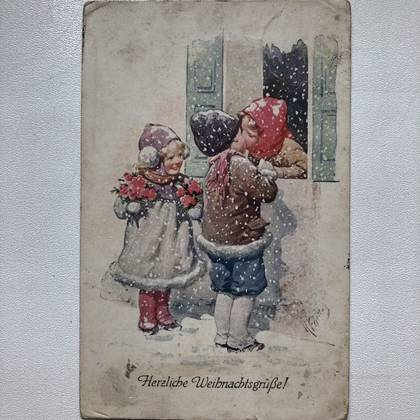
без подписиАдресная сторона: «Антонине Леонидовне Даниловой, Изолятор, Детский Дом, ст. Тамань, ул. Карла Маркса, Russland». По диагонали помечено «Drucksache» — печатное отправление из-за границы; штемпель ТаманиоборотОт именин в реальном училище до Мальмё 1974-го: четырнадцать открыток из семейного архива
«Я тебя всегда понимаю с двух-трёх слов»: письма из СССР в Швецию, 1936–19391936«Я тебя всегда понимаю с двух-трёх слов»: письма из СССР в Швецию, 1936–19391936«Я тебя всегда понимаю с двух-трёх слов»: письма из СССР в Швецию, 1936–19391936«Я тебя всегда понимаю с двух-трёх слов»: письма из СССР в Швецию, 1936–19391936«Я тебя всегда понимаю с двух-трёх слов»: письма из СССР в Швецию, 1936–19391937«Я тебя всегда понимаю с двух-трёх слов»: письма из СССР в Швецию, 1936–19391937«Я тебя всегда понимаю с двух-трёх слов»: письма из СССР в Швецию, 1936–19391937«Я тебя всегда понимаю с двух-трёх слов»: письма из СССР в Швецию, 1936–19391937«Я тебя всегда понимаю с двух-трёх слов»: письма из СССР в Швецию, 1936–19391937«Я тебя всегда понимаю с двух-трёх слов»: письма из СССР в Швецию, 1936–19391937«Я тебя всегда понимаю с двух-трёх слов»: письма из СССР в Швецию, 1936–19391939«Я тебя всегда понимаю с двух-трёх слов»: письма из СССР в Швецию, 1936–19391939«Я тебя всегда понимаю с двух-трёх слов»: письма из СССР в Швецию, 1936–19391939«Я тебя всегда понимаю с двух-трёх слов»: письма из СССР в Швецию, 1936–19391939«Я тебя всегда понимаю с двух-трёх слов»: письма из СССР в Швецию, 1936–19391939«Я тебя всегда понимаю с двух-трёх слов»: письма из СССР в Швецию, 1936–19391939«Купили тебе скрипку»: два письма Евдокии Семёновны в Мальмё, 1950 и 19521950«Купили тебе скрипку»: два письма Евдокии Семёновны в Мальмё, 1950 и 19521950«Купили тебе скрипку»: два письма Евдокии Семёновны в Мальмё, 1950 и 19521950«Купили тебе скрипку»: два письма Евдокии Семёновны в Мальмё, 1950 и 19521952«Купили тебе скрипку»: два письма Евдокии Семёновны в Мальмё, 1950 и 19521952«Купили тебе скрипку»: два письма Евдокии Семёновны в Мальмё, 1950 и 19521952оборот
«28/X-38 г., г. Харьков» — единственный автограф Николая Дмитриевича1938«28/X-38 г., г. Харьков» — единственный автограф Николая Дмитриевича1938Харьков 1937–1938: детинтернат военных строителей, где сходятся муж и жена1938Семь языков и «подожди пока возвращаться»: как Сеня Данилов остался на ЗападеПрасковья Ивановна — «Паша» — брату мужаПрасковья Ивановна — «Паша» — брату мужа
оборотОт именин в реальном училище до Мальмё 1974-го: четырнадцать открыток из семейного архива1925оборотОт именин в реальном училище до Мальмё 1974-го: четырнадцать открыток из семейного архива1931«Купили тебе скрипку»: два письма Евдокии Семёновны в Мальмё, 1950 и 19521950«Купили тебе скрипку»: два письма Евдокии Семёновны в Мальмё, 1950 и 19521950«Купили тебе скрипку»: два письма Евдокии Семёновны в Мальмё, 1950 и 19521950«Купили тебе скрипку»: два письма Евдокии Семёновны в Мальмё, 1950 и 19521952«Купили тебе скрипку»: два письма Евдокии Семёновны в Мальмё, 1950 и 19521952«Купили тебе скрипку»: два письма Евдокии Семёновны в Мальмё, 1950 и 19521952От именин в реальном училище до Мальмё 1974-го: четырнадцать открыток из семейного архива1974оборотОт именин в реальном училище до Мальмё 1974-го: четырнадцать открыток из семейного архива
Алтайское свидетельство 1937 года: откуда взялась бабушка и кто её родители1937Алтайское свидетельство 1937 года: откуда взялась бабушка и кто её родители1952Круг замкнулся: уехала из Евпатории в 1961, умерла в Усть-Каменогорске в 19971993Круг замкнулся: уехала из Евпатории в 1961, умерла в Усть-Каменогорске в 19971997
оборотОт именин в реальном училище до Мальмё 1974-го: четырнадцать открыток из семейного архива1925оборотОт именин в реальном училище до Мальмё 1974-го: четырнадцать открыток из семейного архива1931«Купили тебе скрипку»: два письма Евдокии Семёновны в Мальмё, 1950 и 19521950«Купили тебе скрипку»: два письма Евдокии Семёновны в Мальмё, 1950 и 19521950«Купили тебе скрипку»: два письма Евдокии Семёновны в Мальмё, 1950 и 19521950оборотОткрытка с акварелью Грейс Сирет: тюльпаны, анютины глазки и примулы в синем кувшине. Письмо — на обороте1950«Купили тебе скрипку»: два письма Евдокии Семёновны в Мальмё, 1950 и 19521952«Купили тебе скрипку»: два письма Евдокии Семёновны в Мальмё, 1950 и 19521952«Купили тебе скрипку»: два письма Евдокии Семёновны в Мальмё, 1950 и 19521952От именин в реальном училище до Мальмё 1974-го: четырнадцать открыток из семейного архива1974оборотОт именин в реальном училище до Мальмё 1974-го: четырнадцать открыток из семейного архива
«Это таким я уехал из Крыма»: фотоальбом евпаторийского дома, 1924–19631924оборотОт именин в реальном училище до Мальмё 1974-го: четырнадцать открыток из семейного архива1925оборотОт именин в реальном училище до Мальмё 1974-го: четырнадцать открыток из семейного архива1931«Я тебя всегда понимаю с двух-трёх слов»: письма из СССР в Швецию, 1936–19391936«Я тебя всегда понимаю с двух-трёх слов»: письма из СССР в Швецию, 1936–19391936«Я тебя всегда понимаю с двух-трёх слов»: письма из СССР в Швецию, 1936–19391936«Я тебя всегда понимаю с двух-трёх слов»: письма из СССР в Швецию, 1936–19391936«Я тебя всегда понимаю с двух-трёх слов»: письма из СССР в Швецию, 1936–19391937«Я тебя всегда понимаю с двух-трёх слов»: письма из СССР в Швецию, 1936–19391937«Я тебя всегда понимаю с двух-трёх слов»: письма из СССР в Швецию, 1936–19391937«Я тебя всегда понимаю с двух-трёх слов»: письма из СССР в Швецию, 1936–19391937«Я тебя всегда понимаю с двух-трёх слов»: письма из СССР в Швецию, 1936–19391937«Я тебя всегда понимаю с двух-трёх слов»: письма из СССР в Швецию, 1936–19391937«Я тебя всегда понимаю с двух-трёх слов»: письма из СССР в Швецию, 1936–19391939«Я тебя всегда понимаю с двух-трёх слов»: письма из СССР в Швецию, 1936–19391939«Я тебя всегда понимаю с двух-трёх слов»: письма из СССР в Швецию, 1936–19391939«Я тебя всегда понимаю с двух-трёх слов»: письма из СССР в Швецию, 1936–19391939«Я тебя всегда понимаю с двух-трёх слов»: письма из СССР в Швецию, 1936–19391939«Я тебя всегда понимаю с двух-трёх слов»: письма из СССР в Швецию, 1936–19391939Две школы в занятой и освобождённой Евпатории: свидетельства Николая Лухнёва1946«Это таким я уехал из Крыма»: фотоальбом евпаторийского дома, 1924–19631948Две школы в занятой и освобождённой Евпатории: свидетельства Николая Лухнёва1949«На память брату Саше от Коли Лухнёва»1949«На память брату Саше от Коли Лухнёва»1949«Мамуленьке от её сына Коли» — солдатская карточка 1952 года1952«Мамуленьке от её сына Коли» — солдатская карточка 1952 года1952Первое солдатское письмо из Белоруссии, 1952, на самодельном бланке «Привет из Белоруссии!»: «Служу уже неделю, да неделю ехали, итого 17 дней. Проезжали рядом с Харьковом, но не заехали»1952без подписи1952без подписи1952Поставы глазами солдата, 1952: «Заборов нет. На улице в луже свинья с поросятами… мне так и казалось, что из-за поворота выйдет усатый городовой… всё это показалось мне давно забытой родиной»1952«Это таким я уехал из Крыма»: фотоальбом евпаторийского дома, 1924–19631952«Это таким я уехал из Крыма»: фотоальбом евпаторийского дома, 1924–19631952оборот«Это таким я уехал из Крыма»: фотоальбом евпаторийского дома, 1924–19631952оборот«Это таким я уехал из Крыма»: фотоальбом евпаторийского дома, 1924–19631952Требование библиотеки имени Крупской, 12 января 1953: немедленно сдать Жюля Верна, «Завещание чудака» — срок истёк 16 августа, «в случае не сдачи вами книги дело будет передано в суд»1953
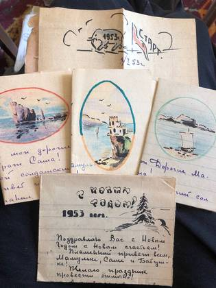
без подписи1953Письмо в Крым, 12 марта 1953, через семь дней после смерти Сталина: «ведь Сталин это была сама жизнь, как воздух, вода… что он в Кремле, что он руководит и думает о всех»1953
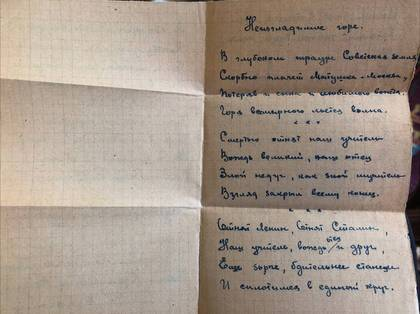
без подписи1953без подписи1953
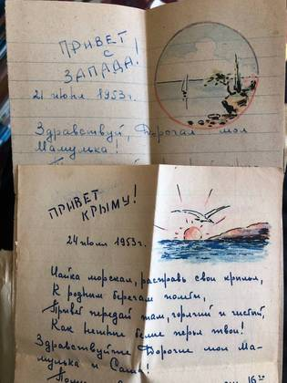
без подписи1953оборот«Это таким я уехал из Крыма»: фотоальбом евпаторийского дома, 1924–19631953«Фуражку на мою башку»: письма Александра Лухнёва из Миасса и с полевых партий, 1954–19611954оборот«Это таким я уехал из Крыма»: фотоальбом евпаторийского дома, 1924–19631954оборот«Крым. Евпатория. Уголок гор. сада»: скульптурная группа детей с шаром и ротонда за деревьями. Крымиздат, 1951, тираж 25 000, цена 30 копеек1954Три года и три месяца: солдатские письма Николая Лухнёва, 1952–19551955Три года и три месяца: солдатские письма Николая Лухнёва, 1952–19551955Три года и три месяца: солдатские письма Николая Лухнёва, 1952–19551955Три года и три месяца: солдатские письма Николая Лухнёва, 1952–19551955Три года и три месяца: солдатские письма Николая Лухнёва, 1952–19551955Три года и три месяца: солдатские письма Николая Лухнёва, 1952–19551955Три года и три месяца: солдатские письма Николая Лухнёва, 1952–19551955«Фуражку на мою башку»: письма Александра Лухнёва из Миасса и с полевых партий, 1954–19611955оборот«Это таким я уехал из Крыма»: фотоальбом евпаторийского дома, 1924–19631955«Это таким я уехал из Крыма»: фотоальбом евпаторийского дома, 1924–19631955«Это таким я уехал из Крыма»: фотоальбом евпаторийского дома, 1924–19631955«Это таким я уехал из Крыма»: фотоальбом евпаторийского дома, 1924–19631955«Фуражку на мою башку»: письма Александра Лухнёва из Миасса и с полевых партий, 1954–19611955«Фуражку на мою башку»: письма Александра Лухнёва из Миасса и с полевых партий, 1954–19611955«Фуражку на мою башку»: письма Александра Лухнёва из Миасса и с полевых партий, 1954–19611955«Фуражку на мою башку»: письма Александра Лухнёва из Миасса и с полевых партий, 1954–19611955«Фуражку на мою башку»: письма Александра Лухнёва из Миасса и с полевых партий, 1954–19611955«Фуражку на мою башку»: письма Александра Лухнёва из Миасса и с полевых партий, 1954–19611955«Фуражку на мою башку»: письма Александра Лухнёва из Миасса и с полевых партий, 1954–19611955Три года и три месяца: солдатские письма Николая Лухнёва, 1952–19551956оборот«Фуражку на мою башку»: письма Александра Лухнёва из Миасса и с полевых партий, 1954–19611956«Фуражку на мою башку»: письма Александра Лухнёва из Миасса и с полевых партий, 1954–19611956«Фуражку на мою башку»: письма Александра Лухнёва из Миасса и с полевых партий, 1954–19611956оборот«Это таким я уехал из Крыма»: фотоальбом евпаторийского дома, 1924–19631956оборот«Это таким я уехал из Крыма»: фотоальбом евпаторийского дома, 1924–19631956«Фуражку на мою башку»: письма Александра Лухнёва из Миасса и с полевых партий, 1954–19611956«Фуражку на мою башку»: письма Александра Лухнёва из Миасса и с полевых партий, 1954–19611956«Фуражку на мою башку»: письма Александра Лухнёва из Миасса и с полевых партий, 1954–19611957«Фуражку на мою башку»: письма Александра Лухнёва из Миасса и с полевых партий, 1954–19611957«Фуражку на мою башку»: письма Александра Лухнёва из Миасса и с полевых партий, 1954–19611957«Фуражку на мою башку»: письма Александра Лухнёва из Миасса и с полевых партий, 1954–19611957«Фуражку на мою башку»: письма Александра Лухнёва из Миасса и с полевых партий, 1954–19611957оборот«Это таким я уехал из Крыма»: фотоальбом евпаторийского дома, 1924–19631957«Комсомолець Микола Лухньов»: евпаторийский завод в крымских газетах, 1958–19591958«Комсомолець Микола Лухньов»: евпаторийский завод в крымских газетах, 1958–19591958«Комсомолець Микола Лухньов»: евпаторийский завод в крымских газетах, 1958–19591958«Комсомолець Микола Лухньов»: евпаторийский завод в крымских газетах, 1958–19591958«Фуражку на мою башку»: письма Александра Лухнёва из Миасса и с полевых партий, 1954–19611958«Фуражку на мою башку»: письма Александра Лухнёва из Миасса и с полевых партий, 1954–19611958«Это таким я уехал из Крыма»: фотоальбом евпаторийского дома, 1924–19631958оборот«Это таким я уехал из Крыма»: фотоальбом евпаторийского дома, 1924–19631958«Фуражку на мою башку»: письма Александра Лухнёва из Миасса и с полевых партий, 1954–19611958«Фуражку на мою башку»: письма Александра Лухнёва из Миасса и с полевых партий, 1954–19611958«Комсомолець Микола Лухньов»: евпаторийский завод в крымских газетах, 1958–19591959«Комсомолець Микола Лухньов»: евпаторийский завод в крымских газетах, 1958–19591959«Комсомолець Микола Лухньов»: евпаторийский завод в крымских газетах, 1958–19591959«Фуражку на мою башку»: письма Александра Лухнёва из Миасса и с полевых партий, 1954–196119594 августа 1961: сдала жилплощадь в Евпатории — и это дата отъезда из Крыма1961«Фуражку на мою башку»: письма Александра Лухнёва из Миасса и с полевых партий, 1954–19611961От именин в реальном училище до Мальмё 1974-го: четырнадцать открыток из семейного архива1974без подписибез подписибез подписиТри года и три месяца: солдатские письма Николая Лухнёва, 1952–1955Три года и три месяца: солдатские письма Николая Лухнёва, 1952–1955«Фуражку на мою башку»: письма Александра Лухнёва из Миасса и с полевых партий, 1954–1961«Фуражку на мою башку»: письма Александра Лухнёва из Миасса и с полевых партий, 1954–1961«Фуражку на мою башку»: письма Александра Лухнёва из Миасса и с полевых партий, 1954–1961«Фуражку на мою башку»: письма Александра Лухнёва из Миасса и с полевых партий, 1954–1961«Фуражку на мою башку»: письма Александра Лухнёва из Миасса и с полевых партий, 1954–1961«Фуражку на мою башку»: письма Александра Лухнёва из Миасса и с полевых партий, 1954–1961«Это таким я уехал из Крыма»: фотоальбом евпаторийского дома, 1924–1963«Это таким я уехал из Крыма»: фотоальбом евпаторийского дома, 1924–1963«Это таким я уехал из Крыма»: фотоальбом евпаторийского дома, 1924–1963«Это таким я уехал из Крыма»: фотоальбом евпаторийского дома, 1924–1963«Это таким я уехал из Крыма»: фотоальбом евпаторийского дома, 1924–1963«Это таким я уехал из Крыма»: фотоальбом евпаторийского дома, 1924–1963«Это таким я уехал из Крыма»: фотоальбом евпаторийского дома, 1924–1963«Это таким я уехал из Крыма»: фотоальбом евпаторийского дома, 1924–1963«Это таким я уехал из Крыма»: фотоальбом евпаторийского дома, 1924–1963оборот«Это таким я уехал из Крыма»: фотоальбом евпаторийского дома, 1924–1963оборот«Это таким я уехал из Крыма»: фотоальбом евпаторийского дома, 1924–1963оборот«Это таким я уехал из Крыма»: фотоальбом евпаторийского дома, 1924–1963«Это таким я уехал из Крыма»: фотоальбом евпаторийского дома, 1924–1963«Это таким я уехал из Крыма»: фотоальбом евпаторийского дома, 1924–1963«Это таким я уехал из Крыма»: фотоальбом евпаторийского дома, 1924–1963«Это таким я уехал из Крыма»: фотоальбом евпаторийского дома, 1924–1963«Это таким я уехал из Крыма»: фотоальбом евпаторийского дома, 1924–1963оборот«Это таким я уехал из Крыма»: фотоальбом евпаторийского дома, 1924–1963оборот«Это таким я уехал из Крыма»: фотоальбом евпаторийского дома, 1924–1963«Это таким я уехал из Крыма»: фотоальбом евпаторийского дома, 1924–1963«Это таким я уехал из Крыма»: фотоальбом евпаторийского дома, 1924–1963«Это таким я уехал из Крыма»: фотоальбом евпаторийского дома, 1924–1963«Это таким я уехал из Крыма»: фотоальбом евпаторийского дома, 1924–1963«Это таким я уехал из Крыма»: фотоальбом евпаторийского дома, 1924–1963«Это таким я уехал из Крыма»: фотоальбом евпаторийского дома, 1924–1963«Это таким я уехал из Крыма»: фотоальбом евпаторийского дома, 1924–1963«Это таким я уехал из Крыма»: фотоальбом евпаторийского дома, 1924–1963«Это таким я уехал из Крыма»: фотоальбом евпаторийского дома, 1924–1963«Это таким я уехал из Крыма»: фотоальбом евпаторийского дома, 1924–1963«Это таким я уехал из Крыма»: фотоальбом евпаторийского дома, 1924–1963«Это таким я уехал из Крыма»: фотоальбом евпаторийского дома, 1924–1963«Это таким я уехал из Крыма»: фотоальбом евпаторийского дома, 1924–1963«Фуражку на мою башку»: письма Александра Лухнёва из Миасса и с полевых партий, 1954–1961«Фуражку на мою башку»: письма Александра Лухнёва из Миасса и с полевых партий, 1954–1961оборотОт именин в реальном училище до Мальмё 1974-го: четырнадцать открыток из семейного архива
Алтайское свидетельство 1937 года: откуда взялась бабушка и кто её родители1937Алтайское свидетельство 1937 года: откуда взялась бабушка и кто её родители1952
«Не могу забыть Вашего милого отношения к нашему классу» — открытки ученика 1914 года1914«Это таким я уехал из Крыма»: фотоальбом евпаторийского дома, 1924–19631924оборотОт именин в реальном училище до Мальмё 1974-го: четырнадцать открыток из семейного архива1925оборотОт именин в реальном училище до Мальмё 1974-го: четырнадцать открыток из семейного архива1931«Я тебя всегда понимаю с двух-трёх слов»: письма из СССР в Швецию, 1936–19391936«Я тебя всегда понимаю с двух-трёх слов»: письма из СССР в Швецию, 1936–19391936«Я тебя всегда понимаю с двух-трёх слов»: письма из СССР в Швецию, 1936–19391936«Я тебя всегда понимаю с двух-трёх слов»: письма из СССР в Швецию, 1936–19391936«Я тебя всегда понимаю с двух-трёх слов»: письма из СССР в Швецию, 1936–19391937«Я тебя всегда понимаю с двух-трёх слов»: письма из СССР в Швецию, 1936–19391937«Я тебя всегда понимаю с двух-трёх слов»: письма из СССР в Швецию, 1936–19391937«Я тебя всегда понимаю с двух-трёх слов»: письма из СССР в Швецию, 1936–19391937«Я тебя всегда понимаю с двух-трёх слов»: письма из СССР в Швецию, 1936–19391937«Я тебя всегда понимаю с двух-трёх слов»: письма из СССР в Швецию, 1936–19391937«Я тебя всегда понимаю с двух-трёх слов»: письма из СССР в Швецию, 1936–19391939«Я тебя всегда понимаю с двух-трёх слов»: письма из СССР в Швецию, 1936–19391939«Я тебя всегда понимаю с двух-трёх слов»: письма из СССР в Швецию, 1936–19391939«Я тебя всегда понимаю с двух-трёх слов»: письма из СССР в Швецию, 1936–19391939«Я тебя всегда понимаю с двух-трёх слов»: письма из СССР в Швецию, 1936–19391939«Я тебя всегда понимаю с двух-трёх слов»: письма из СССР в Швецию, 1936–19391939
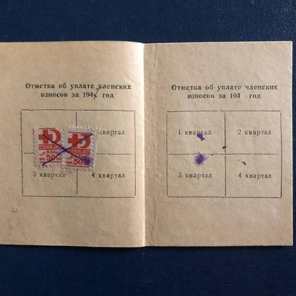
без подписи1946
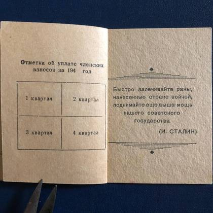
без подписи1946«Это таким я уехал из Крыма»: фотоальбом евпаторийского дома, 1924–19631948«На память брату Саше от Коли Лухнёва»1949«На память брату Саше от Коли Лухнёва»1949«Купили тебе скрипку»: два письма Евдокии Семёновны в Мальмё, 1950 и 19521950«Купили тебе скрипку»: два письма Евдокии Семёновны в Мальмё, 1950 и 19521950«Купили тебе скрипку»: два письма Евдокии Семёновны в Мальмё, 1950 и 19521950«Это таким я уехал из Крыма»: фотоальбом евпаторийского дома, 1924–19631952«Это таким я уехал из Крыма»: фотоальбом евпаторийского дома, 1924–19631952оборот«Это таким я уехал из Крыма»: фотоальбом евпаторийского дома, 1924–19631952оборот«Это таким я уехал из Крыма»: фотоальбом евпаторийского дома, 1924–19631952«Купили тебе скрипку»: два письма Евдокии Семёновны в Мальмё, 1950 и 19521952«Купили тебе скрипку»: два письма Евдокии Семёновны в Мальмё, 1950 и 19521952«Купили тебе скрипку»: два письма Евдокии Семёновны в Мальмё, 1950 и 19521952оборот«Это таким я уехал из Крыма»: фотоальбом евпаторийского дома, 1924–19631953«Фуражку на мою башку»: письма Александра Лухнёва из Миасса и с полевых партий, 1954–19611954оборот«Это таким я уехал из Крыма»: фотоальбом евпаторийского дома, 1924–19631954оборот«Крым. Евпатория. Уголок гор. сада»: скульптурная группа детей с шаром и ротонда за деревьями. Крымиздат, 1951, тираж 25 000, цена 30 копеек1954Самостоятельная работа по химии ученика 10 «А» Лухнёва, одиннадцатое ноября — а поля исписаны физикой: v = at, F = ma и деление в столбик1954
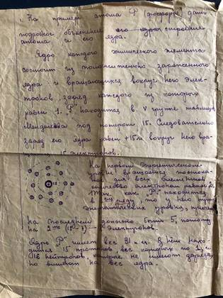
без подписи1954
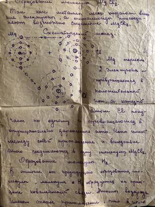
без подписи1954
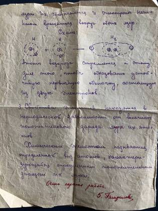
без подписи1954Три года и три месяца: солдатские письма Николая Лухнёва, 1952–19551955Три года и три месяца: солдатские письма Николая Лухнёва, 1952–19551955Три года и три месяца: солдатские письма Николая Лухнёва, 1952–19551955Три года и три месяца: солдатские письма Николая Лухнёва, 1952–19551955Три года и три месяца: солдатские письма Николая Лухнёва, 1952–19551955Три года и три месяца: солдатские письма Николая Лухнёва, 1952–19551955Три года и три месяца: солдатские письма Николая Лухнёва, 1952–19551955«Фуражку на мою башку»: письма Александра Лухнёва из Миасса и с полевых партий, 1954–19611955оборот«Это таким я уехал из Крыма»: фотоальбом евпаторийского дома, 1924–19631955«Это таким я уехал из Крыма»: фотоальбом евпаторийского дома, 1924–19631955«Это таким я уехал из Крыма»: фотоальбом евпаторийского дома, 1924–19631955«Это таким я уехал из Крыма»: фотоальбом евпаторийского дома, 1924–19631955«Фуражку на мою башку»: письма Александра Лухнёва из Миасса и с полевых партий, 1954–19611955«Фуражку на мою башку»: письма Александра Лухнёва из Миасса и с полевых партий, 1954–19611955Два документа Александра Лухнёва: удостоверение на значок ГТО I ступени по приказу средней школы № 1 от 14 июня и членский билет Общества Красного Креста 1946 года с маркой в 50 копеек1955«Фуражку на мою башку»: письма Александра Лухнёва из Миасса и с полевых партий, 1954–19611955«Фуражку на мою башку»: письма Александра Лухнёва из Миасса и с полевых партий, 1954–19611955«Фуражку на мою башку»: письма Александра Лухнёва из Миасса и с полевых партий, 1954–19611955«Фуражку на мою башку»: письма Александра Лухнёва из Миасса и с полевых партий, 1954–19611955«Фуражку на мою башку»: письма Александра Лухнёва из Миасса и с полевых партий, 1954–19611955Три года и три месяца: солдатские письма Николая Лухнёва, 1952–19551956оборот«Фуражку на мою башку»: письма Александра Лухнёва из Миасса и с полевых партий, 1954–19611956«Фуражку на мою башку»: письма Александра Лухнёва из Миасса и с полевых партий, 1954–19611956«Фуражку на мою башку»: письма Александра Лухнёва из Миасса и с полевых партий, 1954–19611956оборот«Это таким я уехал из Крыма»: фотоальбом евпаторийского дома, 1924–19631956оборот«Это таким я уехал из Крыма»: фотоальбом евпаторийского дома, 1924–19631956«Фуражку на мою башку»: письма Александра Лухнёва из Миасса и с полевых партий, 1954–19611956Бланк «Привет с Урала!», 19 мая 1956, 21:00. Сверху рукой: «Эта картинка немного изображает вид на озеро Ильмень, если смотреть со стороны гор старого Миасса». Ниже — «Здравствуйте мои дорогие, милые и хорошие Мамулька и брат Коля!»1956
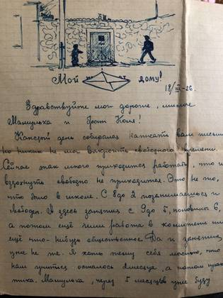
без подписи1956«Фуражку на мою башку»: письма Александра Лухнёва из Миасса и с полевых партий, 1954–19611956
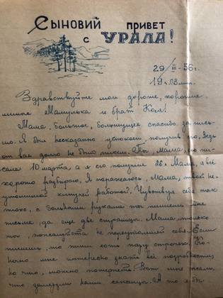
без подписи1956Зимний угол на квартире, 1956: «В комнате тепло и сухо, хотя на дворе зима… Чистим двор, возим воду, когда есть время. Я к морозам уже давно привык и не обращаю на них внимания»1956«Фуражку на мою башку»: письма Александра Лухнёва из Миасса и с полевых партий, 1954–19611957«Фуражку на мою башку»: письма Александра Лухнёва из Миасса и с полевых партий, 1954–19611957«Фуражку на мою башку»: письма Александра Лухнёва из Миасса и с полевых партий, 1954–19611957«Фуражку на мою башку»: письма Александра Лухнёва из Миасса и с полевых партий, 1954–19611957«Фуражку на мою башку»: письма Александра Лухнёва из Миасса и с полевых партий, 1954–19611957оборот«Это таким я уехал из Крыма»: фотоальбом евпаторийского дома, 1924–19631957«Фуражку на мою башку»: письма Александра Лухнёва из Миасса и с полевых партий, 1954–19611958«Фуражку на мою башку»: письма Александра Лухнёва из Миасса и с полевых партий, 1954–19611958«Это таким я уехал из Крыма»: фотоальбом евпаторийского дома, 1924–19631958оборот«Это таким я уехал из Крыма»: фотоальбом евпаторийского дома, 1924–19631958«Фуражку на мою башку»: письма Александра Лухнёва из Миасса и с полевых партий, 1954–19611958«Фуражку на мою башку»: письма Александра Лухнёва из Миасса и с полевых партий, 1954–19611958«Фуражку на мою башку»: письма Александра Лухнёва из Миасса и с полевых партий, 1954–19611959«Фуражку на мою башку»: письма Александра Лухнёва из Миасса и с полевых партий, 1954–19611961«Рис. А. Лухнева»: две карикатуры в районной газете, Артёмовский, 19681968«Рис. А. Лухнева»: две карикатуры в районной газете, Артёмовский, 19681968«Рис. А. Лухнева»: две карикатуры в районной газете, Артёмовский, 19681968От именин в реальном училище до Мальмё 1974-го: четырнадцать открыток из семейного архива1974
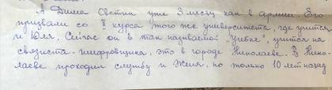
без подписи2004без подписи2004без подписи2006
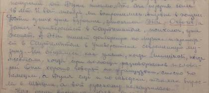
без подписиТри года и три месяца: солдатские письма Николая Лухнёва, 1952–1955Три года и три месяца: солдатские письма Николая Лухнёва, 1952–1955«Фуражку на мою башку»: письма Александра Лухнёва из Миасса и с полевых партий, 1954–1961без подписибез подписи
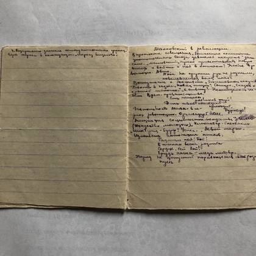
без подписи
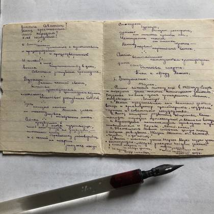
без подписибез подписи«Фуражку на мою башку»: письма Александра Лухнёва из Миасса и с полевых партий, 1954–1961«Фуражку на мою башку»: письма Александра Лухнёва из Миасса и с полевых партий, 1954–1961«Фуражку на мою башку»: письма Александра Лухнёва из Миасса и с полевых партий, 1954–1961«Фуражку на мою башку»: письма Александра Лухнёва из Миасса и с полевых партий, 1954–1961«Фуражку на мою башку»: письма Александра Лухнёва из Миасса и с полевых партий, 1954–1961«Это таким я уехал из Крыма»: фотоальбом евпаторийского дома, 1924–1963«Это таким я уехал из Крыма»: фотоальбом евпаторийского дома, 1924–1963«Это таким я уехал из Крыма»: фотоальбом евпаторийского дома, 1924–1963«Это таким я уехал из Крыма»: фотоальбом евпаторийского дома, 1924–1963«Это таким я уехал из Крыма»: фотоальбом евпаторийского дома, 1924–1963«Это таким я уехал из Крыма»: фотоальбом евпаторийского дома, 1924–1963«Это таким я уехал из Крыма»: фотоальбом евпаторийского дома, 1924–1963«Это таким я уехал из Крыма»: фотоальбом евпаторийского дома, 1924–1963«Это таким я уехал из Крыма»: фотоальбом евпаторийского дома, 1924–1963оборот«Это таким я уехал из Крыма»: фотоальбом евпаторийского дома, 1924–1963оборот«Это таким я уехал из Крыма»: фотоальбом евпаторийского дома, 1924–1963оборот«Это таким я уехал из Крыма»: фотоальбом евпаторийского дома, 1924–1963«Это таким я уехал из Крыма»: фотоальбом евпаторийского дома, 1924–1963«Это таким я уехал из Крыма»: фотоальбом евпаторийского дома, 1924–1963«Это таким я уехал из Крыма»: фотоальбом евпаторийского дома, 1924–1963«Это таким я уехал из Крыма»: фотоальбом евпаторийского дома, 1924–1963«Это таким я уехал из Крыма»: фотоальбом евпаторийского дома, 1924–1963оборот«Это таким я уехал из Крыма»: фотоальбом евпаторийского дома, 1924–1963оборот«Это таким я уехал из Крыма»: фотоальбом евпаторийского дома, 1924–1963«Это таким я уехал из Крыма»: фотоальбом евпаторийского дома, 1924–1963«Это таким я уехал из Крыма»: фотоальбом евпаторийского дома, 1924–1963«Это таким я уехал из Крыма»: фотоальбом евпаторийского дома, 1924–1963«Это таким я уехал из Крыма»: фотоальбом евпаторийского дома, 1924–1963«Это таким я уехал из Крыма»: фотоальбом евпаторийского дома, 1924–1963«Это таким я уехал из Крыма»: фотоальбом евпаторийского дома, 1924–1963«Это таким я уехал из Крыма»: фотоальбом евпаторийского дома, 1924–1963«Это таким я уехал из Крыма»: фотоальбом евпаторийского дома, 1924–1963«Это таким я уехал из Крыма»: фотоальбом евпаторийского дома, 1924–1963«Это таким я уехал из Крыма»: фотоальбом евпаторийского дома, 1924–1963«Это таким я уехал из Крыма»: фотоальбом евпаторийского дома, 1924–1963«Это таким я уехал из Крыма»: фотоальбом евпаторийского дома, 1924–1963«Это таким я уехал из Крыма»: фотоальбом евпаторийского дома, 1924–1963Обложки двух книжек: удостоверения на значок ГТО (отпечатано 25 августа 1953) и членского билета Общества Красного КрестаПочтовое извещение № 93, штемпель «Миасс Челяб. обл.»: перевод из Евпатории на имя «Лухневу Алекс. Ник.», адрес — «Геологоразвед.»Клякса, ставшая рюкзаком: «Извините за кляксу. Нечаянно сорвалась!» — и тут же дорисован турист с поклажей в горах«Фуражку на мою башку»: письма Александра Лухнёва из Миасса и с полевых партий, 1954–1961
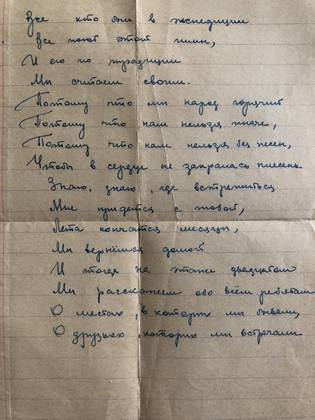
без подписиПолевые зарисовки пером на линованной бумаге: человек на склоне среди гор и трое идут сквозь высокую траву
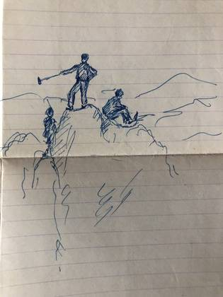
без подписи«Фуражку на мою башку»: письма Александра Лухнёва из Миасса и с полевых партий, 1954–1961оборотОт именин в реальном училище до Мальмё 1974-го: четырнадцать открыток из семейного архиваоборотбез подписи
«Купили тебе скрипку»: два письма Евдокии Семёновны в Мальмё, 1950 и 19521950«Купили тебе скрипку»: два письма Евдокии Семёновны в Мальмё, 1950 и 19521950«Купили тебе скрипку»: два письма Евдокии Семёновны в Мальмё, 1950 и 19521950«Купили тебе скрипку»: два письма Евдокии Семёновны в Мальмё, 1950 и 19521952«Купили тебе скрипку»: два письма Евдокии Семёновны в Мальмё, 1950 и 19521952«Купили тебе скрипку»: два письма Евдокии Семёновны в Мальмё, 1950 и 19521952
«Работает без домашних заданий»: брошюра о Татьяне Алексеевне Загребельной1990«Работает без домашних заданий»: брошюра о Татьяне Алексеевне Загребельной1990
«Купили тебе скрипку»: два письма Евдокии Семёновны в Мальмё, 1950 и 19521950«Купили тебе скрипку»: два письма Евдокии Семёновны в Мальмё, 1950 и 19521950«Купили тебе скрипку»: два письма Евдокии Семёновны в Мальмё, 1950 и 19521950«Купили тебе скрипку»: два письма Евдокии Семёновны в Мальмё, 1950 и 19521952«Купили тебе скрипку»: два письма Евдокии Семёновны в Мальмё, 1950 и 19521952«Купили тебе скрипку»: два письма Евдокии Семёновны в Мальмё, 1950 и 19521952
оборотОт именин в реальном училище до Мальмё 1974-го: четырнадцать открыток из семейного архива1925оборотОт именин в реальном училище до Мальмё 1974-го: четырнадцать открыток из семейного архива1931«Купили тебе скрипку»: два письма Евдокии Семёновны в Мальмё, 1950 и 19521950«Купили тебе скрипку»: два письма Евдокии Семёновны в Мальмё, 1950 и 19521950«Купили тебе скрипку»: два письма Евдокии Семёновны в Мальмё, 1950 и 19521950«Купили тебе скрипку»: два письма Евдокии Семёновны в Мальмё, 1950 и 19521952«Купили тебе скрипку»: два письма Евдокии Семёновны в Мальмё, 1950 и 19521952«Купили тебе скрипку»: два письма Евдокии Семёновны в Мальмё, 1950 и 19521952От именин в реальном училище до Мальмё 1974-го: четырнадцать открыток из семейного архива1974без подписиоборотОт именин в реальном училище до Мальмё 1974-го: четырнадцать открыток из семейного архива
оборотОт именин в реальном училище до Мальмё 1974-го: четырнадцать открыток из семейного архива1925оборотОт именин в реальном училище до Мальмё 1974-го: четырнадцать открыток из семейного архива1931От именин в реальном училище до Мальмё 1974-го: четырнадцать открыток из семейного архива1974оборотОт именин в реальном училище до Мальмё 1974-го: четырнадцать открыток из семейного архива
Лист печатной схемы: младшие Грищенко и Лухнёвы 1961–1986, рядом ветвь Ризен — Даниловых 1902–1938
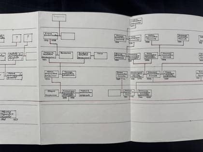
без подписи
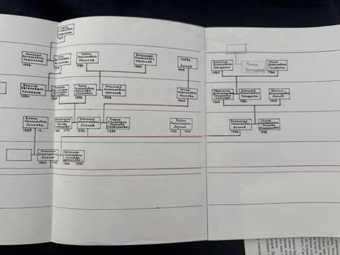
без подписи
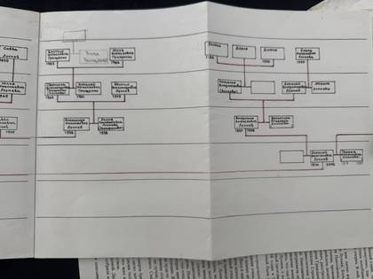
без подписи
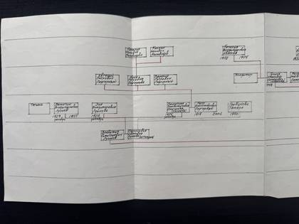
без подписибез подписиРазворот печатной схемы, ядро дерева: Лухнёвы, Мелиховы, Колпаковы, Даниловы, Топчий. Внизу подписи о происхождении — Прокофий Данилов «из „Черногоров“, Закарпатье» и Семён Топчий «из кубанских казаков». Отчество Топчия на листе — «Дорафеевич»; позже оно исправлено по письму дочери на «Ерофеевич»Семь языков и «подожди пока возвращаться»: как Сеня Данилов остался на ЗападеПисарь, фельдфебель и лошадка Рыжка: Дмитрий Ефимович Лухнёвбез подписибез подписи
оборотОт именин в реальном училище до Мальмё 1974-го: четырнадцать открыток из семейного архива1925оборотОт именин в реальном училище до Мальмё 1974-го: четырнадцать открыток из семейного архива1931«Купили тебе скрипку»: два письма Евдокии Семёновны в Мальмё, 1950 и 19521950«Купили тебе скрипку»: два письма Евдокии Семёновны в Мальмё, 1950 и 19521950«Купили тебе скрипку»: два письма Евдокии Семёновны в Мальмё, 1950 и 19521950«Купили тебе скрипку»: два письма Евдокии Семёновны в Мальмё, 1950 и 19521952«Купили тебе скрипку»: два письма Евдокии Семёновны в Мальмё, 1950 и 19521952«Купили тебе скрипку»: два письма Евдокии Семёновны в Мальмё, 1950 и 19521952От именин в реальном училище до Мальмё 1974-го: четырнадцать открыток из семейного архива1974оборотОт именин в реальном училище до Мальмё 1974-го: четырнадцать открыток из семейного архива
«Купили тебе скрипку»: два письма Евдокии Семёновны в Мальмё, 1950 и 19521950«Купили тебе скрипку»: два письма Евдокии Семёновны в Мальмё, 1950 и 19521950«Купили тебе скрипку»: два письма Евдокии Семёновны в Мальмё, 1950 и 19521950«Купили тебе скрипку»: два письма Евдокии Семёновны в Мальмё, 1950 и 19521952«Купили тебе скрипку»: два письма Евдокии Семёновны в Мальмё, 1950 и 19521952«Купили тебе скрипку»: два письма Евдокии Семёновны в Мальмё, 1950 и 19521952
Алтайское свидетельство 1937 года: откуда взялась бабушка и кто её родители1937Алтайское свидетельство 1937 года: откуда взялась бабушка и кто её родители1952
Без человека
снимков: 17
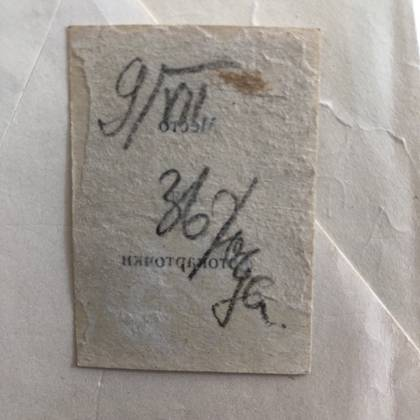
без подписи1936без подписи1936
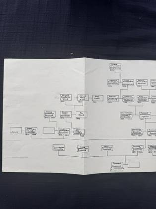
без подписи
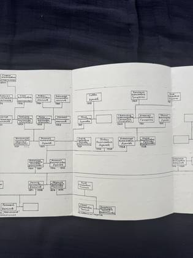
без подписибез подписи
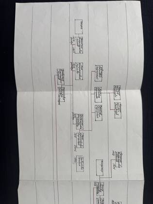
без подписи
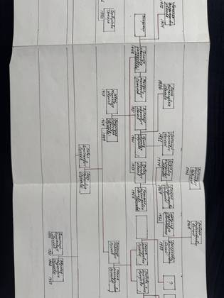
без подписи
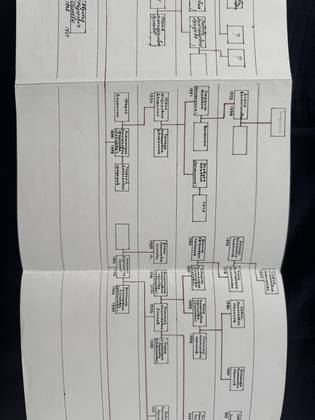
без подписи
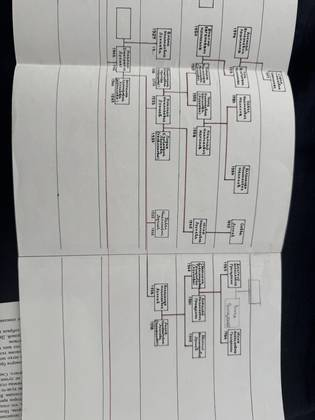
без подписи
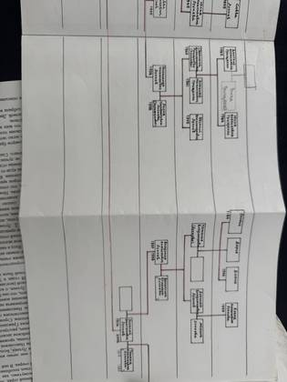
без подписи
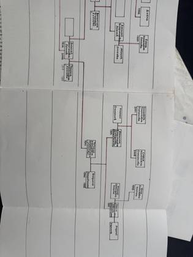
без подписи
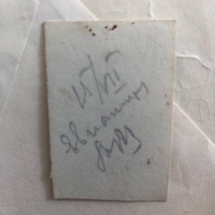
без подписибез подписибез подписибез подписи
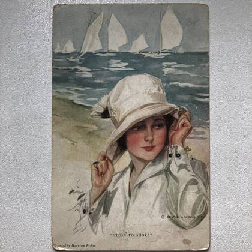
без подписиРаскрашенная от руки карточка: «Евпатория. Библиотека им. Пушкина» — ротонда под куполом, два каменных льва у входа